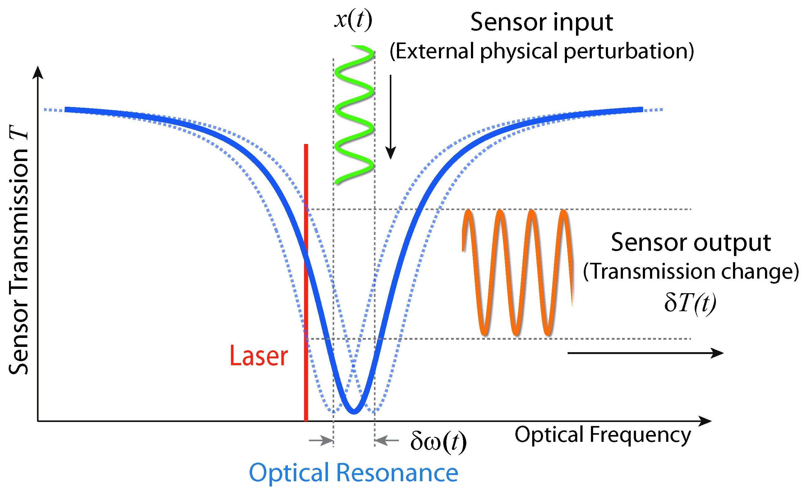
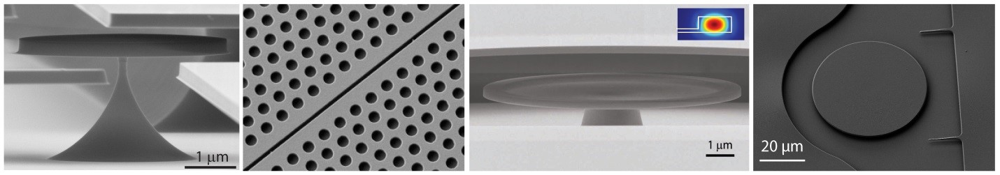
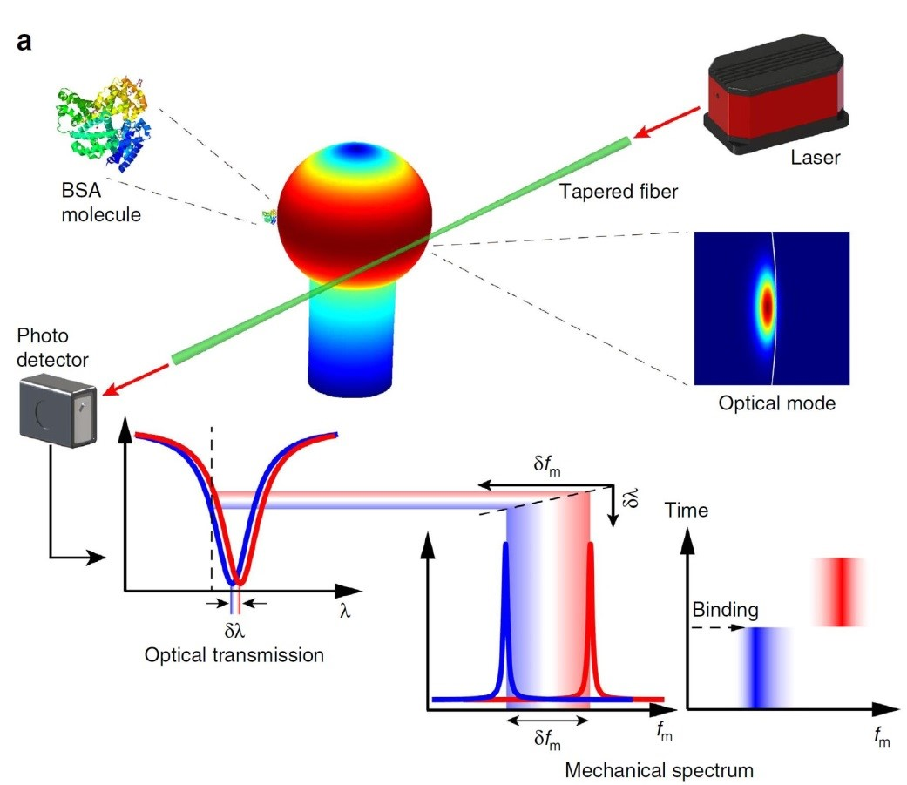

Integrated photonic platforms are ideal for sensing application. On one hand, a variety of physical mechanisms can be flexibly implemented and integrated for diverse and multi-modal sensing applications. On the other hand, the enhanced light-matter interaction is able to significantly increase the sensing resolution. We are actively engaged in developing various sensing applications using integrated photonic approaches, such as temperature sensing, spectroscopic sensing, particle sensing, biomedical sensing, displacement sensing, position and inertial sensing, etc.


An interesting sensing mechanism is the optomechanical effect where the mechanical motion can be efficiently manipulated by radiation pressure at the nanoscopic scale, particularly in high-Q micro-/nano-cavities where the photon-phonon interaction can be dramatically enhanced. The resulting strong optomechanical coupling exhibits exceptional capability of motion control down to single quantum level. On one hand, such intriguing capability enables manipulating the photonic and phononic quantum states, thus allowing for the exploration of novel photon-phonon interaction dynamics. On the other hand, it offers a great opportunity for sensing mechanical motion with unprecedented performance. We are actively engaged in developing various sensing applications using the optomechanical principle.
